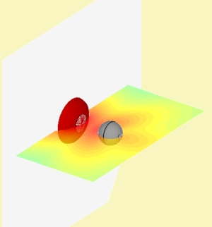
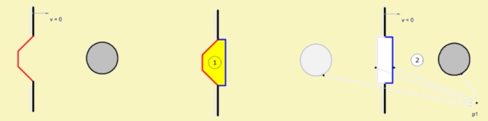
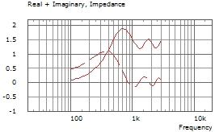
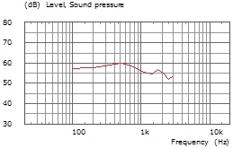

Infinite Baffle in General
 |
 |
See also, Form - Infinite Baffle.
Mathematically, boundary conditions of the IB are satisfied by using a special type of Green-function for the Helmholtz Integral [15]. This special Green-function yields for the velocity:
vn = 0
for all points at the surface of the Infinite Baffle and in normal direction. In this way there is no need to model the infinite plane (... well, at least approximately ...).
The workings of the trick with the special Green-function can be explained by imagining a mirrored source behind the Infinite Baffle. At receiving point P1 the sound pressure is the sum of the original source and its mirrored image. However, in the plane of the IB the normal velocity yields zero everywhere.
Note on Concave Shaped Boundaries
The trick with the special Green-function works fine, as long all elements are in front of the Infinite Baffle. However, as soon as there are elements behind the Infinite Baffle then the mirror-technique runs into difficulties. This becomes clear if we look at the left picture below. The new Green-function yields vn=0 everywhere in the plane. However, it should make an exception at the aperture, where the normal velocity is likely anything than zero.
AKABAKs' solution is to divide the structure into two subdomains in such a way that the exterior structure exhibits only elements in front of the Infinite Baffle.

An example-simulation may demonstrate this and also that results are different for without and with using the interface-technique:
 |
 |
 |
 |
The above picture shows a cone-shaped diaphragm in an Infinite Baffle. The transparent gasket forms the interface, ie a virtual boundary with continuity of pressure and velocity. The Infinite Baffle is at the level of the cone. The interface couples two subdomains, one with Element Type=Interior and one with Element Type=Exterior. The interior subdomain is bounded by the diaphragm and by the interface. The exterior side of the interface is convex and will be mirrored automatically in order to satisfy boundary conditions on the Infinite Baffle. If you check Views/Structure/IB Mirrors AKABAK displays also the mirrored elements (last picture above).
Experiment
 |
 |
 |
 |
| Wrong model, non-interfaced | Correct model, interfaces used |
The above spectra display the results of simulations. On the left column are the results of the non-interfaced model and on the right side are those using subdomain-modeling. The spectra of the top row are radiation impedance curves rendered as real- and imaginary parts. The bottom row displays the sound pressure level in front of the diaphragm some distance away.
The spectra display different results. The correct model is on the right side, which employs interfaces. The radiation impedance is more pronounced as it should be for a concave shape. Also visible is a slight amplification in the sound pressure curve exactly in the frequency band where the real part of the radiation impedance has its main-peak. Note, that this simulation was not coupled to the mechanical domain, otherwise this amplification can be even more pronounced.